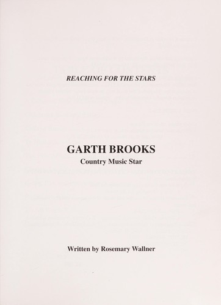

To Kill a Mockingbird
Description
Set in the small Southern town of Maycomb, Alabama, during the Depression, To Kill a Mockingbird follows three years in the life of 8-year-old Scout Finch, her brother, Jem, and their father, Atticus—three years punctuated by the arrest and eventual trial of a young black man accused of raping a white woman. Though her story explores big themes, Harper Lee chooses to tell it through the eyes of a child. The result is a tough and tender novel of race, class, justice, and the pain of growing up.
Like the slow-moving occupants of her fictional town, Lee takes her time getting to the heart of her tale; we first meet the characters who will play their roles in the drama to come, and come to know them by their world. Atticus is a man of unshakeable integrity and love for his children; Jem and Scout are playful but kind, intelligent, but not yet adult; and Boo Radley is a mystery. The book is a classic coming-of-age story that has touched generations of readers and remains as relevant today as when it was first published.
Book Information
- ISBN:
- 978-0-06-112008-4
- Publisher:
- HarperCollins
- Publication Year:
- 1960
- Edition:
- 50th Anniversary Edition
- Pages:
- 324
- Language:
- English
Availability
- Status:
- Available Now
- Total Copies:
- 5
- Available Copies:
- 3
- On Hold:
- 0